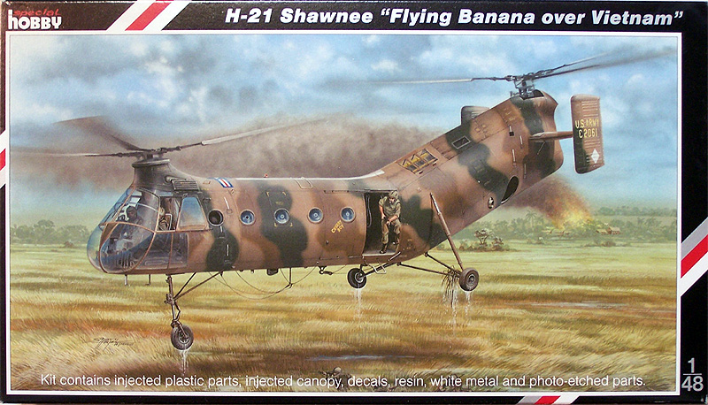
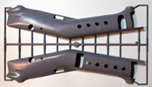
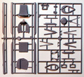
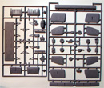
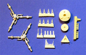
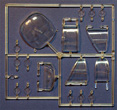
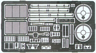
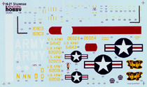

{kind=link}
{kind=link}
{kind=link}
{kind=link}
{kind=link}
{kind=link}
{kind=link}


Special Hobby 1/48 H-21 Flying Banana (Shawnee)

Kit #48062
MSRP $74.95 $63.70 from Great Models Web Store
Images and text Copyright © 2008 by Matt Swan
Developmental Background
In 1943 the War was still raging in Europe, the Japanese were being held at bay in the Pacific and Frank Piasecki was discussing twin rotor lifting systems with the Navy's Bureau of Aeronautics (BuAer). The BuAer was already looking at the early Sikorsky helicopters as rescue aircraft however these craft were severely limited in lift capacity, often barely being able to handle the pilot, fuel and one passenger. They wanted a vertical lift aircraft that had a useful load of about 1800 pounds. The problem with Piasecki’s proposal was that no one was certain a tandem rotor system could actually fly.
In 1945 Piasecki built his first successful twin rotor system and flew it. Unfortunately this first effort had no more useful load that the existing Sikorsky systems. Encouraged by this success he continued development of the tandem rotor system. In March of 1945 the first tandem system flew and was nicknamed the Dog Ship or sagging sausage. By June of 1948 the basic design of what was to become the H-21 series was complete and five prototypes were ordered. This new design actually exceeded the original specification with a 3000 pound useful load and by the next year the Marine Corp was expressing interest in the craft. During the 1950s the type was in service with the Marine Corp, US Army and US Coast Guard. Piasecki’s company was ultimately acquired by Boeing Vertol and the H-21 lead to the development of the CH-47 Chinook in the 1960s.
The CH-21 was an Air Force workhorse serving in the early years of the Vietnam war however it was slow and vulnerable to enemy fire. It was even rumored that one was brought down by a Viet Cong spear. It was powered by one Curtis-Wright R1820-103 Cyclone supercharged 1150 engine mounted in the aft fuselage. As an assault helicopter could carry 22 fully-equipped troops, in a MedEvac role it could carry twelve stretchers and two medical crewmen. A variety of attempts were made to arm the type with 12.7mm door guns, flexible chin guns and even one instance of an old B-29 remote turret being mounted under the nose. Not only was the type used by the US Armed Forces and the US Coast Guard but by the French Navy, the Royal Canadian Air Force and the West German Air Force. The French used an armed version of the CH-21 in Algeria, mounting guns in the door ways and on the skids. The type played a vital role in the development of helicopters in combat situations and was replaced by the UH-1 Huey and the C-47 Chinook.
The Kit
The kit arrives in a standard sized top opening box of medium duty cardboard with nice artwork of a Vietnam era Shawnee. Inside we have the main kit parts in a single large poly bag with the clear parts in a secondary poly bag. Resin and white metal parts are packaged separately. The five sprues of light gray plastic are all of good quality with very fine sprue gates, a nice smooth surface texture with delicately engraved panel lines. There is some light flash on a few parts. I had to carefully trim the forward opening on the fuselage pieces and remove some flash in the door areas. As with most European produced kits there are no locator tabs on the larger pieces which I prefer. Interior detail is pretty good with both resin and photo etched pieces going into the front office to help dress it up. All the modeler really needs to add here is maybe some wiring and cable work to get a truly spectacular interior. It does not stop here though, detailing continues into the crew/cargo compartment with canvas seats and an overhead equipment channel. Several areas of the engine compartment that are visible through cooling screens or exhaust ports are also detailed.
The rotor heads rely on primary white metal pieces with resin detail parts. The white metal parts are well done with very little mold separation lines visible. It will require some care attaching the plastic rotors to the heads. Outside the fuselage there are more fine detail items covered in the photo etched package including a nice external hoist set-up. The small bag of resin parts look to be well cast with only very fine flash that knocks right off. The clear parts are very clean demonstrating good clarity and well defined raised frame lines. During test fitting of the fuselage I did note that there is a poor mating of the surfaces. While the various panel lines do mate up well there will be some filling needed along the upper spine of the fuselage. Overall casting of the parts in general is very good with no visible sink marks but there are some pronounced injector pins in the fuselage interior that will need to be removed. Taking inventory of the box we get ninety five gray plastic pieces, eighteen clear parts, twenty one resin parts, two white metal rotor heads and sixty nine photo etched pieces for a total of two hundred five pieces in the box.






You may click on any of the small images above to view larger pictures
Decals and Instructions
Kit assembly instructions are provided as a small ten page pamphlet. It opens with a brief historical background of the type in English and Czech. Two pages are devoted to complete part mapping and a simple paint code chart listing colors with Gunze color codes. This is followed by fourteen exploded view construction steps that are all clearly drawn with ample paint codes and part numbers displayed throughout. 
In addition to the assembly instructions is a six page full color painting and decal placement guide. Here we have instructions for painting and marking five different helicopters and a single page with common stencil placements.
The decals consist of a single large sheet by AviPrint. The ink does not appear to be excessively thick and there is minimal extraneous carrier film. Color density looks good and print registry is also good. The blue used in the Stars and Bars does look a little dark. Not only are the basic markings for the five offered aircraft provided but there is a reasonable collection of service stencils and warning markings.
Conclusions
Overall this looks like a very nice kit that will require a medium level of skill to build. Surface detail, general parts engineering and interior detail is all good. There are a few minor issues with the fit of the fuselage halves but nothing a competent modeler couldn’t handle. The kit includes all the extra detail items the average modeler could ask for with resin and photo etched accessories. The metal rotor heads can be a little tricky in assembly and are probably will require the most care during assembly. Instructions are clear and well drawn, decals are comprehensive. This is a significant piece of aviation history and a must for any serious collector of helicopter models. I give the kit a good recommendation.